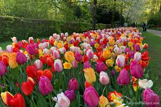
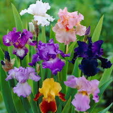
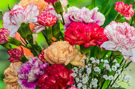

The language of flowers (also known as floriography) is a symbolic way of
communicating emotions and messages through flowers.
Popular in the Victorian era, different flowers and their colors carried specific meanings.
People used flower arrangements (called tussie-mussies) to convey secret messages, especially
in times when direct expressions of feelings were discouraged.
Today, floriography continues in bouquets, weddings, and special occasions.
Rose
Binomial Nomenclature
- Rosa Rubiginosa
A woody perennial flowering plant of the genus Rosa
Symbolism of Flower
Pink — Perfect happiness, please believe me
Red — Love, I love you
Dark Crimson — Mourning
Yellow — Decrease of love, jealousy, try to care
White — Innocence and purity, I am worthy of you, you’re heavenly, secrecy and silence
White and Red mixed — Unity, flower emblem of England
White, Dried — Death is preferable to loss of virtue
White, Withered — Transient impression, fleeting beauty, you made no impression
Thornless — Love at first sight
Leaf — You may hope
Bouquet of Mature Blooms — Gratitude
Orchid
Binomial Nomenclature
- Orchidaceae
A diverse and widespread family of flowering plants (Orchidaceae) known for their vibrant colors and unique shapes, often found in tropical and subtropical regions.
Symbolism of Flower
Love
Beauty, beautiful lady
Refinement
Chinese Symbol for many children
Tulip
Binomial Nomenclature
- Tulipa
A genus of spring-blooming, bulbous plants in the lily family (Liliaceae), known for their vibrant, showy blooms and are native to Central Asia and Turkey
Symbolism of Flower
Perfect lover
Fame
Flower emblem of Holland
Red - Believe me, declaration of love
Yellow - There's sunshine in your smile
Variegated - Beautiful eyes

Sunflower
Binomial Nomenclature
- Helianthus annuus
A genus of nearly 70 species of herbaceous plants in the aster family, native primarily to North and South America
Symbolism of Flower
Long life
Feelings of adoration, admiration and platonic love
Loyalty and strong bonds between two people
Seeking out positivity and strength
Nourishing yourself and others
Good luck and lasting happiness
Iris
Binomial Nomenclature
- Iris
A flowering plant genus of 310 accepted species with showy flowers.
Symbolism of Flower
Your friendship means so much to me
Faith
Hope

Daisy
Binomial Nomenclature
- Bellis perennis
Any of several species of flowering plants belonging to the aster family (Asteraceae)
Symbolism of Flower
Innocence
Loyal love
I'll never tell
Purity
Hydrangea
Binomial Nomenclature
- Hortensia
A genus of more than 70 species of flowering plants native to Asia and the Americas.
Symbolism of Flower
Thank you for understanding
Frigidity
Heartlessness
Peonies
Binomial Nomenclature
- Paeonia
Any flowering plant in the genus Paeonia, the only genus in the family Paeoniaceae.
Symbolism of Flower
Shame
Happy life
Happy marriage
Carnation
Binomial Nomenclature
- Dianthus caryophyllus
Herbaceous plant of the pink, or carnation, family (Caryophyllaceae), native to the Mediterranean area
Symbolism of Flower
Fascination
Women love
Pink - I'll never forget you
Red - My heart aches for you, admiration
Purple - Capriciousness
White - Sweet and lovely, innocence, pure love, woman's good luck gift
Solid Color - Yes
Striped - No, refusal, sorry I can't be with you, wish I could be with you

Lilies
Binomial Nomenclature
- Lilium
A genus of herbaceous flowering plants growing from bulbs, all with large and often prominent flowers.
Symbolism of Flower
Orange - Hatred
White - Virginity, purity, majesty, it's heavenly to be with you
Yellow - I'm walking on air, false and gay
Dahlia
Binomial Nomenclature
- Dahlia
A genus of bushy, tuberous, herbaceous perennial plants native to Mexico and Central America
Symbolism of Flower
Red - Confidence and strength, remind someone of their resilience
Yellow/Orange - Warmth and positivity
Pink - Feminie beauty and elegance
Green - New beginnings and transformation
Purple - Sophistication
White - Purity and commitment
Marigold
Binomial Nomenclature
- Tagetes
A genus of flowering plants in the sunflower family, known for their vibrant colors, strong fragrance, and use in various cultures and gardens.